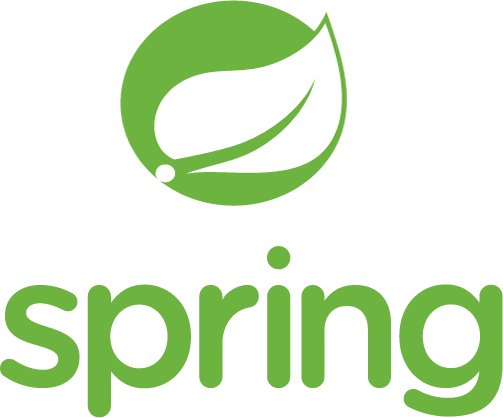

타임라인
 빛고을고등학교
빛고을고등학교
2012.03
2015.02
조선이공대학교
육군 병장
2019.02
 [직장] 성산씨엔에스
[직장] 성산씨엔에스
2023.02
- '12 |
- '13 |
- '14 |
- '15 |
- '16 |
- '17 |
- '18 |
- '19 |
- '20 |
- '21 |
- '22 |
- '23
기술 스택
-
Spring Framework웹 개발에 주로 자바 스프링 프레임워크를 사용하였습니다. 스프링의 객체 지향 및 모듈화 아키텍처를 완벽하게 이해하고 적용하여 효율적인 구조를 구축하였습니다. 또한, 스프링 시큐리티를 사용하여 애플리케이션의 보안을 강화하였고, MyBatis를 사용하여 효과적인 데이터베이스 관리 및 트랜잭션 처리를 구현하였습니다. RESTful API와의 연동도 원활하게 처리하여 최적화된 웹 서비스를 제공하기 위한 기본을 확립하였습니다.
- Spring Boot
- 전자정부프레임워크
- JSP
- JSTL
- Mybatis
- WebSocket
- JPA
-
 C#윈도우 기반 GUI 프로그램을 개발 할 때 주로 C#을 사용하였습니다. C#의 객체지향적인 특성을 활용하여 가독성과 유지 보수성이 높은 코드를 작성하였고, WPF와 같은 기술을 사용하여 사용자 경험을 향상시키는 모던한 인터페이스를 구축하였습니다. ASP를 사용하여 RESTful API를 구축하였고, 이를 통해 윈도우 기반 GUI 프로그램과 원활한 상호작용을 이루는 서비스를 제공하였습니다.
C#윈도우 기반 GUI 프로그램을 개발 할 때 주로 C#을 사용하였습니다. C#의 객체지향적인 특성을 활용하여 가독성과 유지 보수성이 높은 코드를 작성하였고, WPF와 같은 기술을 사용하여 사용자 경험을 향상시키는 모던한 인터페이스를 구축하였습니다. ASP를 사용하여 RESTful API를 구축하였고, 이를 통해 윈도우 기반 GUI 프로그램과 원활한 상호작용을 이루는 서비스를 제공하였습니다.- .Net
- WPF
- ASP
-
 DataBase주로 MySQL과 MariaDB를 사용하여 데이터베이스를 설계하고 관리하였습니다. 두 데이터베이스의 특성과 성능을 고려하여 효율적인 구조를 구축하고 쿼리 최적화를 진행해 응답 속도를 개선했습니다. 이 외에도, MSSQL, PostgreSQL, InfluxDB와 같은 데이터베이스를 활용한 경험도 있으며, 광범위한 데이터베이스 환경에서의 이해도와 호환성을 높이기 위해 끊임없이 공부해왔습니다.
DataBase주로 MySQL과 MariaDB를 사용하여 데이터베이스를 설계하고 관리하였습니다. 두 데이터베이스의 특성과 성능을 고려하여 효율적인 구조를 구축하고 쿼리 최적화를 진행해 응답 속도를 개선했습니다. 이 외에도, MSSQL, PostgreSQL, InfluxDB와 같은 데이터베이스를 활용한 경험도 있으며, 광범위한 데이터베이스 환경에서의 이해도와 호환성을 높이기 위해 끊임없이 공부해왔습니다.- MySQL
- MariaDB
- MSSQL
- PostgreSQL
- InfluxDB
-
ETC
- JavaScript
- JQUERY
- Apache Tomcat
- Linux
- AWS EC2
- MS Azure Compute
- C
- C++
기타
등급 :
맞은 문제 :
클래스 :
※ 실시간 반영
알고리즘 공부 - 백준
점수 :
맞은 문제 :
ㅤ
ㅤ
알고리즘 공부 - 프로그래머스